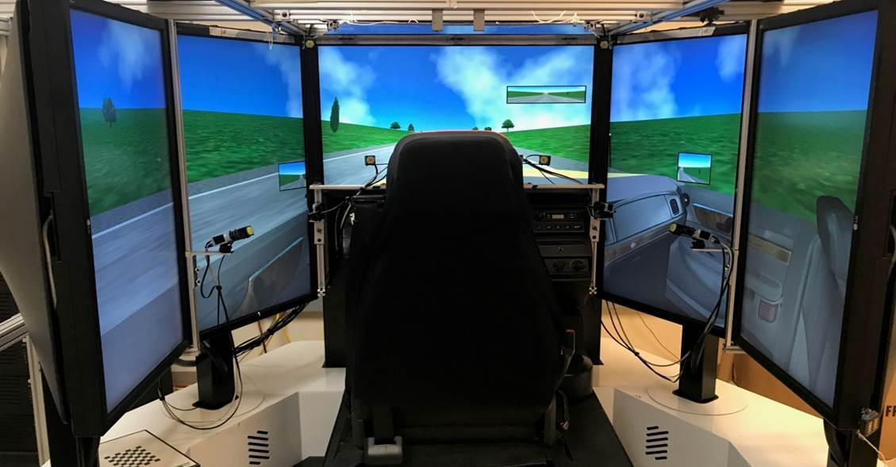
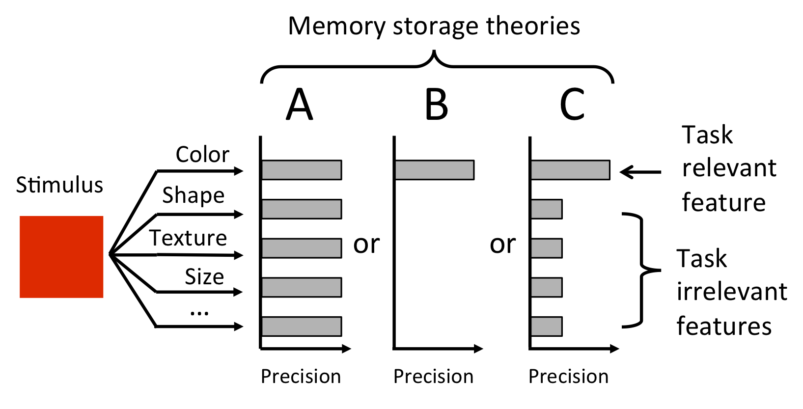
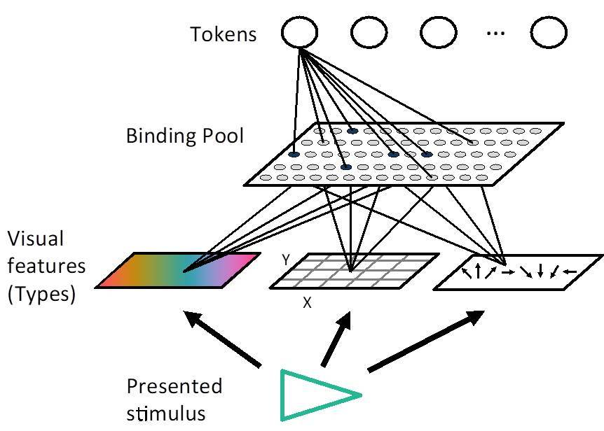

For PDFs, just click any of the references below
Click here for Conference Posters
How do we multitask?
My current research involves using cognitive models (ACT-R) to simulate how participants multitask in challenging environments, such as monitoring a screen with multiple concurrent subtasks.
When driving, how do we move our eyes to detect potential hazards?
My research using driving simulation has focused evaluating how people move their eyes while driving to detect hazards. Specifically, this research has evaluated how individuals with vision impairment (e.g., simulated central vision loss, real central vision loss, and real peripheral visual field loss) compensate for their vision impairment. I have also developed a pipeline that automates processing of driving simulator and eye and head tracking data. Furthermore, I have used the driving simulator to investigate change blindness to hazards.
How much does task relevance influence our memories?
When looking at objects, do we only remember the parts of the object that are relevant to us or do we remember everything about those objects? One of the difficulties of this research question is that simply asking about what they remember influences what they focus on in subsequent trials. I have used surprise trial methodologies to probe how much people remember about task irrelevant portions of an object, which has important implications in our understanding of memory.
How does visual working memory work?
My research has focused on the testing and creation of a computational simulation of how visual information is bound to form a memory representation in visual working memory. This model, called the Binding Pool model, simulated encoding as the conjunction of the visual features that compose an object (e.g., color, size) and a token, the ability to individuate an object in memory from other objects in memory. The Binding Pool model provided a mechanism for simulating the trade-off between the number of objects maintained in memory and the quality of each memory representation
How do we deploy our attention in space and time when there are multiple targets?
There are limitations in how visual attention can be deployed to multiple targets that appear close in time (e.g., attentional blink) and close in spatial proximity (e.g., localized attentional interference). However, these effects are typically evaluated with either space or time held constant. Here, we varied space and time to see if these effects would be present in more uncertain conditions.